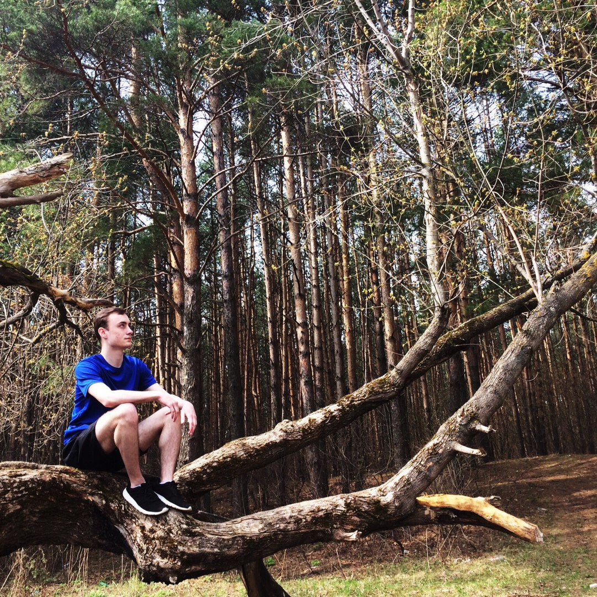

Персональная информация
- Имя:Черников Вадим Алексеевич
- Родился:18 июня, 2000
- Живу:Нижний Новгород
- Учусь:Нижегородский радиотехнический коллежд/ на специальности ПКС
- Телефон:8-953-575-57-32
- Соц. сети:ВК
- Email:vadik.chernikol@gmail.com
Мои интересы
- Спорт (легкая, тяжелая атлетика)
- Музыка (реп, хип-хоп, трап)
- Техника (автомобили, компьютеры)
О моем домашнем животном
Моего кота зовут Персик. Завели мы его в 2007 году, когда я пошел в школу. Он очень красивый и милый. Когда он был маленький об был куда активнее, чем сейчас. Он часто приходит ко мне ночью и мы засыпаем вдвоем. Сейчас ему уже 11 лет, я его очень полюбил за все эти годы.